文献信息
F. van Riggelen-Doelman et al., “Coherent spin qubit shuttling through germanium quantum dots”, Nature Communications 15, 5716 (2024). arXiv:2308.02406 · DOI:10.1038/s41467-024-49358-y 原文为 arXiv 预印本版本的机器可读转换，公式与图注以原文为准；本页仅作站内索引与全文查阅，引用请以正式出版物为准。 本文实测的高保真相干输运是全局操控与频率均匀化方案的前提：电子沿 g 因子梯度快速输运获得平均 g 因子，把频率可调范围扩大到自然分散量级。
全文
Floor van Riggelen-Doelman,1 Chien-An Wang,1 Sander L. de Snoo,1 William I. L. Lawrie,1 Nico W. Hendrickx,1
Maximilian Rimbach-Russ,1 Amir Sammak,2 Giordano Scappucci,1 Corentin Déprez,1 and Menno Veldhorst1
1QuTech and Kavli Institute of Nanoscience, Delft University of Technology,
PO Box 5046, 2600 GA Delft, The Netherlands
2QuTech and Netherlands Organisation for Applied Scientific Research (TNO), Delft, The Netherlands (Dated: August 7, 2023)
Quantum links can interconnect qubit registers and are therefore essential in networked quantum computing. Semiconductor quantum dot qubits have seen significant progress in the high-fidelity operation of small qubit registers but establishing a compelling quantum link remains a challenge. Here, we show that a spin qubit can be shuttled through multiple quantum dots while preserving its quantum information. Remarkably, we achieve these results using hole spin qubits in germanium, despite the presence of strong spin-orbit interaction. We accomplish the shuttling of spin basis states over efective lengths beyond 300 µm and demonstrate the coherent shuttling of superposition states over efective lengths corresponding to 9 µm, which we can extend to 49 µm by incorporating dynamical decoupling. These findings indicate qubit shuttling as an efective approach to rout qubits within registers and to establish quantum links between registers.
INTRODUCTION
The envisioned approach for semiconductor spin qubits towards fault-tolerant quantum computation centers on the concept of quantum networks, where qubit registers are interconnected via quantum links [1]. Significant progress has been made in controlling few-qubit registers [2, 3]. Recent eforts have led to demonstrations of high fidelity single- and two-qubit gates [4, 5], quantum logic above one Kelvin [6–8] and operation of a 16 quantum dot array [9]. However, scaling up to larger qubit numbers requires changes in the device architecture [10– 13].
Inclusion of short-range and mid-range quantum links could be particularly efective to establish scalability, addressability, and qubit connectivity. The coherent shuttling of electron or hole spins is an appealing concept for the integration of such quantum links in spin qubit devices. Short-range coupling, implemented by shuttling a spin qubit through quantum dots in an array, can provide flexible qubit routing and local addressability [14, 15]. Moreover, it allows to increase connectivity beyond nearest-neighbour coupling and decrease the number of gates needed to execute algorithms. Midrange links, implemented by shuttling spins through a multitude of quantum dots, may entangle distant qubit registers for networked computing and allow for qubit operations at dedicated locations [14, 16–18]. Furthermore, such quantum buses could provide space for the integration of on-chip control electronics [1], depending on their footprint.
The potential of shuttling-based quantum buses has stimulated research on shuttling electron charge [19–21] and spin [15, 22–29]. While nuclear spin noise prevents high-fidelity qubit operation in gallium arsenide, demonstrations of coherent transfer of individual electron spins through quantum dots are encouraging [22–26]. In silicon, qubits can be operated with high-fidelity and this has been employed to displace a spin qubit in a double quantum dot [15, 27]. Networked quantum computers, however, will require integration of qubit control and shuttling through quantum dots.
Meanwhile, quantum dots defined in strained germanium (Ge/SiGe) heterostructures have emerged as a promising platform for hole spin qubits [30, 31]. The high quality of the platform allowed for rapid development of single spin qubits [32, 33], singlet-triplet qubits [34–36], a four qubit processor [2], and a 4 4 quantum dot array with shared gate control [9]. While the strong spin orbit interaction allows for fast and all-electrical control, the resulting anisotropic g-tensor [31, 37] complicates the spin dynamics and may challenge the feasibility of a quantum bus.
Here, we demonstrate that spin qubits can be shuttled through quantum dots. These experiments are performed with two hole spin qubits in a 2 2 germanium quantum dot array. Importantly, we operate in a regime where we can implement single qubit logic and coherently transfer spin qubits to adjacent quantum dots. Furthermore, by performing experiments with precise voltage pulses and sub-nanosecond time resolution, we can mitigate finite qubit rotations induced by spin-orbit interactions. In these optimized sequences we find that the shuttling performance is limited by dephasing and can be extended through dynamical decoupling.
COHERENT SHUTTLING OF SINGLE HOLESPIN QUBITS
Fig. 1.a shows a germanium 2 2 quantum dot array identical to the one used in the experiment [2]. The chemical potentials and the tunnel couplings of the quantum dots are controlled with virtual gates , which consist of combinations of voltages on the plunger gates and the barrier gates. We operate the device with two spin qubits in quantum dots and and initialised
i
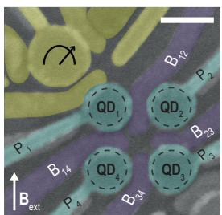
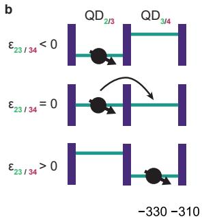
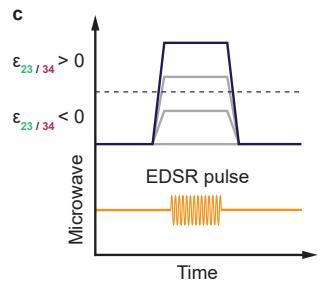
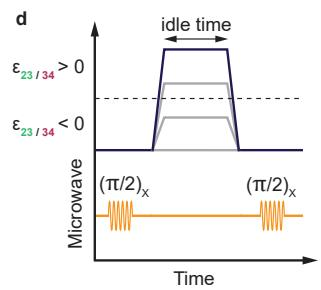
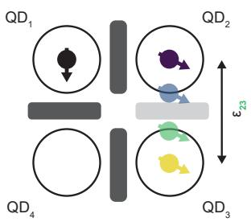
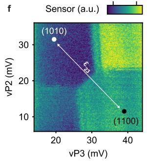
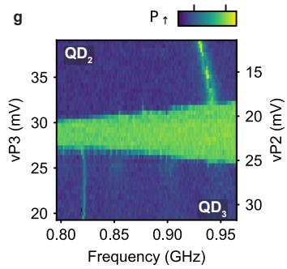
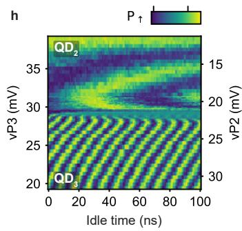
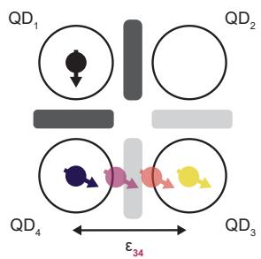
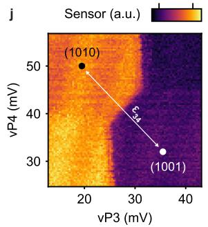
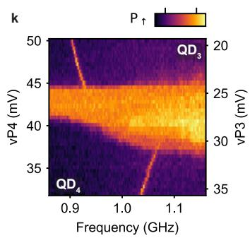
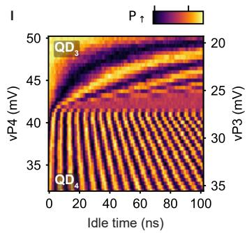
Figure 1. Coherent shuttling of hole spin qubits in germanium double quantum dots. a, A false colored scanning electron microscope image of a similar device to the one used in this work. The quantum dots are formed under the plunger gates (light blue) and separated by barrier gates (dark blue) which control the tunnel couplings. A single hole transistor is defined by the yellow gates and is used as charge sensor. The scale bar corresponds to 100 nm. b, Schematic showing the principle of bucket brigade mode shuttling. The detuning energy between the two quantum dots is progressively changed such that it becomes energetically favorable for the hole to tunnel from one quantum dot to another. Schematic of the pulses used for the shuttling experiments shown in (g) and (k), where the resonance frequency of the qubit is probed after the application of a detuning pulse using a 4 µs EDSR pulse. d, Schematic of the pulses used for coherent shuttling experiments of which the results are shown in (h) and (l). The qubit is prepared in a superposition state using pulse and is transferred to the empty quantum dot with a detuning pulse of varying amplitude, and then brought back to its initial position after an idle time. After applying another pulse we readout the spin state. Schematic illustrating the shuttling of a spin qubit between and (e) and between and (i). f, j, Charge stability diagrams of (f) and (j). To shuttle the qubit from one site to another, the virtual plunger gate voltages are varied along the detuning axis (white arrow), which crosses the interdot charge transition line. g, k, Probing of the resonance frequency along the detuning axi for the double quantum dot (g) and . The resonance frequencies of the spin in the diferent quantum dots are clearly visible, indicating the possibility to shuttle a hole while preserving its spin polarization. Nearby the charge transition, the resonance frequency cannot be resolved due to a combination of efects discussed in Supplementary Note 1. h, l, Coherent free evolution of a qubit during the shuttling between QD2-QD3 (h) and . Since the Larmor frequency varies along the detuning axes, the qubit initialized in a superposition state acquires a phase that varies with the idle time resulting in oscillations in the spin-up probabilities.
the state (see Methods). We use the qubit in as an ancilla to readout the hole spin in , using latched Pauli spin blockade [2, 38, 39]. The other qubit starts in and is shuttled to the other quantum dots by changing the detuning energies between the quantum dots (Fig. 1.b, e and i). The detuning energies are varied by pulsing the plunger gate voltages as illustrated in Fig. 1.f and j. Additionally, we increase the tunnel couplings between and before shuttling to allow for adiabatic charge transfer.
The g-tensor of hole spin qubits in germanium is sensitive to the local electric field. Therefore, the Larmor frequency is diferent in each quantum dot [32–34]. We exploit this efect to confirm the shuttling of a hole spin from one quantum dot to another. In Fig. 1.c. we show the experimental sequence used to measure the qubit resonance frequency, while changing the detuning to transfer the qubit. Fig 1.g (k) shows the experimental results for spin transfers from to to . Two regions can be clearly distinguished in between which varies by 110 (130) MHz. This obvious change in clearly shows that the hole is shuttled from to to when applying a suficiently large detuning pulse. To investigate whether such transfer is coherent, we probe the free evolution of qubits prepared in a superposition state after applying a detuning pulse (Fig. 1.d) [27]. The resulting coherent oscillations are shown in Fig. 1.h (l). They are visible over the full range of voltages spanned by the experiment and arise from a phase accumulation during the idle time. Their frequency is determined by the diference in resonance frequency between the starting and end point in detuning as shown in Supplementary Figure 1. The abrupt change in marks the point where the voltage pulse is suficiently large to transfer the qubit from to to . These results clearly demonstrate that single hole spin qubits can be coherently transferred.
THE EFFECT OF STRONG SPIN-ORBIT INTERACTION ON SPIN SHUTTLING
The strong spin-orbit interaction in our system has a significant impact on the spin dynamics during the shuttling. It appears when shuttling a qubit in a state between and using fast detuning pulses with voltage ramps of 4 ns. Doing this generates coherent oscillations shown in Fig. 2.b that appear only when the qubit is in . They result from the strong spin-orbit interaction and the use of an almost in-plane magnetic field [40]. In this configuration, the direction of the spin quantization axis depends strongly on the local electric field [35, 37, 41–43] and can change significantly between neighbouring quantum dots. Therefore, a qubit in a spin basis state in becomes a superposition state in when diabatically shuttled. Consequently, the spin precesses around the quantization axis of until it is shuttled back (Fig. 2.a). This leads to qubit rotations and the aforementioned oscillations.
While these oscillations are clearly visible for voltage pulses with ramp times of few nanoseconds, they fade as the ramp times are increased, as shown in Fig. and vanish for ns. The qubit is transferred adiabatically and can follow the change in quantization axis and therefore remains in the spin basis state in both quantum dots. From the visibility of the oscillations, we estimate that the quantization axis of is tilted by at least compared to the quantization axis of . These values are corroborated by independent estimations made by fitting the evolution of along the detuning axes (see Supplementary Note 2).
Fig. 2.d and Fig. 2.e display the magnetic field dependence of the oscillations generated by diabatic shuttling. Their frequencies increase linearly with the field and match the Larmor frequencies measured for a spin in the target quantum dot. This is consistent with the explanation that the oscillations are due to the spin precessing around the quantization axis of the second quantum dot.
SHUTTLING PERFORMANCE
To quantify the performance of shuttling a spin qubit, we implement the experiments depicted in Fig. 3.a, e and f [15, 27] and study how the state of a qubit evolves depending on the number of subsequent shuttling events. For hole spins in germanium, it is important to account for rotations induced by the spin-orbit interaction. This can be done by aiming to avoid unintended rotations, or by developing methods to correct them. An example of the first approach is transferring the spin qubits adiabatically. This implies using voltage pulses with ramps of tenths of nanoseconds, which are significant with respect to the dephasing time. However, this strongly limits the shuttling performance (see Supplementary Figure 5). Instead, we can mitigate rotations by carefully tuning the duration of the voltage pulses, such that the qubit performs an integer number of 2π rotations around the quantization axis of the respective quantum dot. This approach is demanding, as it involves careful optimization of the idle times in each quantum dot as well as the ramp times, as depicted in Fig. 3.b. However, it allows for fast shuttling, with ramp times of typically 4 ns and idle times of 1 ns, significantly reducing the dephasing experienced by the qubit during the shuttling. We employ this strategy in the rest of our experiments.
We first characterize the fidelity of shuttling spin basis states. We do this by preparing a qubit in a or state and transferring it multiple times between the quantum dots. Fig. 3.c and d display the spin-up fraction measured as a function of the number of shuttling steps . The probability of ending up in the initial state shows a clear exponential dependence on n. No oscillations of with n are visible, confirming that the pulses have been successfully optimized to account for unwanted spin rotations. We find for the shuttling of basis states characteristic decay constants shuttlings, corresponding to polarization transfer fidelities This is similar to the fidelities reached in silicon devices [15, 27], despite the anisotropic g-tensors due to the strong spin-orbit interaction in our platform.
We now focus on the performance of coherent shut-
a
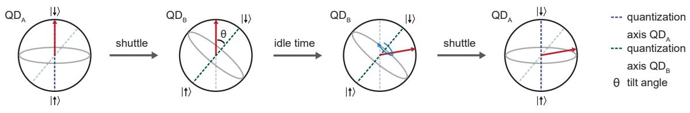
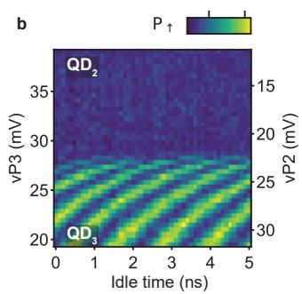
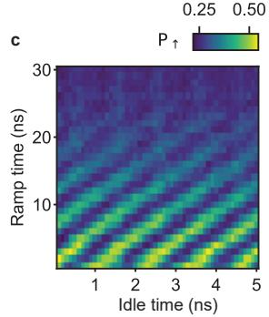
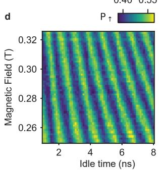
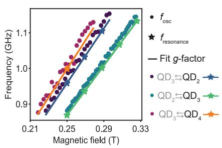
Figure 2. Rotations induced while shuttling by the diference in quantization axes. Schematic explaining the efect of the change in quantization axis direction that the qubit experiences during the shuttling process. The diference in quantization axis between quantum dots is caused by the strong spin-orbit interaction. b, Oscillations induced by the change in quantization axis while shuttling diabatically a qubit in a state between and . Ramp times of 4 ns are used for the detuning pulses. Oscillations due to the change in quantization axis at a fixed point in detuning, as function of the voltage pulse ramp time used to shuttle the spin. When the ramp time is long enough, typically above 30 ns, the spin i shuttled adiabatically and the oscillations vanish. d, Magnetic-field dependence of the oscillations induced by the diference in quantization axis. Frequency of the oscillations induced by the change in quantization axis as a function of magnetic field for diferent shuttling processes. The oscillation frequency for is extracted from measurements displayed in (d) (and similar experiments for the other quantum dot pairs) and is plotted with points. scales linearly with the magnetic field. Comparing with resonance frequencies measured using EDSR pulses (data points depicted with stars) reveals that is given by the Larmor frequency of the quantum dot towards which the qubit is shuttled (black label).
tling. We prepare a superposition state via an EDSR pulse, shuttle the qubit, apply another pulse and measure the spin state. Importantly, one must account for zˆ-rotations experienced by the qubits during the experiments. Therefore, we vary the phase of the EDSR pulse for the second pulse. For each we then extract the amplitude A of the oscillations that appear as function of [15, 27]. Fig. 3.g, h show the evolution of as a function of n for shuttling between adjacent quantum dots. We fit the experimental results using A0 and find characteristic decay constants and . Remarkably, these numbers compare favourably to measured in a SiMOS electron double quantum dot [27], where the spin-orbit coupling is weak.
The exponents, and reveal that the decays are not exponential. This contrasts with observations in silicon [15, 27], and suggests that the shuttling of hole spins in germanium is limited by other mechanisms. Two types of errors can be distinguished: those induced by the shuttling processes and errors due to the dephasing during free evolution. To investigate the efect of the latter, we modify the shuttling sequence and include a echoing pulse in the middle as displayed in Fig. 3.e. Fig. 3.g and h show the experimental results and it is clear that in germanium the coherent shuttling performance is improved significantly using an echo pulse: we can extend the shuttling by a factor of four to five, reaching a characteristic decay of more than 300 shuttles. Similarly, the use of CPMG sequences incorporating two decoupling pulses (Fig. 3.f) allows further, though modest, improvements. These enhancements in the shuttling performance confirm that dephasing is limiting the shuttling performance contrary to observations in SiMOS [27]. We speculate that the origin of the difference is two-fold. Firstly, due to the stronger spin-orbit interaction, the spin is more sensitive to charge noise, resulting in a shorter dephasing times [44]. Secondly, the excellent control over the potential landscape in germanium allows minimizing the errors which are due to the shuttling itself.
SHUTTLING THROUGH QUANTUM DOTS
For distant qubit coupling, it is essential that a qubit can be coherently shuttled through a series of quantum dots. This is more challenging, as it requires control and optimization of a larger amount of parameters. We perform two types of experiments to probe the shuttling through a quantum dot, labelled corner shuttling and triangular shuttling. Fig. 4.b shows a schematic of the corner shuttling, which consists of transferring a qubit from to to and back along the same route. The triangular shuttling, depicted in Fig. 4.e, consists of shuttling the qubit from to to , and then directly back to , without passing through (for the charge stability diagram and a detailed description see Supplementary Note 4).
a Pulses polarization and Ramsey
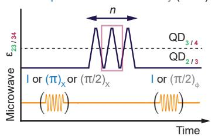
b
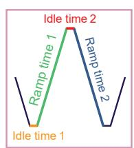
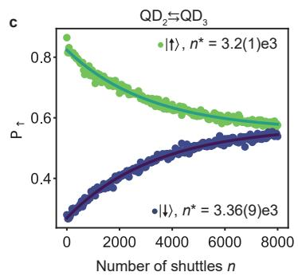
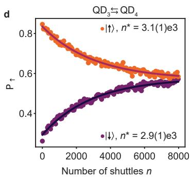
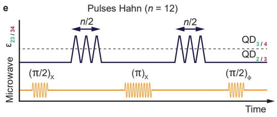
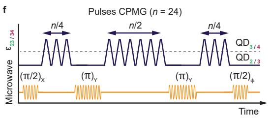
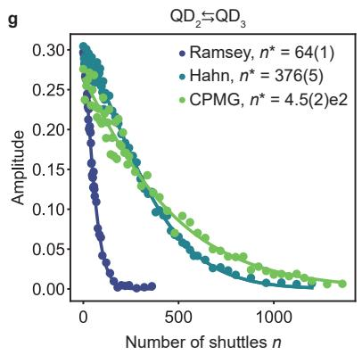
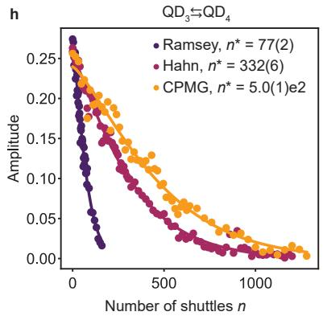
Figure 3. Quantifying the performance for the shuttling in double quantum dots. a, Schematic of the pulse sequence used for quantifying the performance of shuttling basis states (blue) or a superposition state (grey). The spin qubit is prepared in the quantum dot where the shuttling experiment starts, by either applying an identity gate (shuttling a state), a pulse (shuttling a state) or pulse (shuttling a superposition state, also referred to as Ramsey shuttling experiments). Detuning pulses are applied to the plunger gates to shuttle the hole from one quantum dot to another, back and forth, and finally the appropriate pulses are applied to prepare for readout. Moving the qubit from one quantum dot to another is counted as one shuttling event . Since the hole always needs to be shuttled back for readout, n is always an even number. The schematic shows an example for . b, Zoom-in on the detuning pulses used for the shuttling. To make an integer number of 2π rotation(s) around the quantization axis of the second quantum , all ramp and idle times in the pulse need to be optimized. , Spin-up probabilities P measured after shuttling n times a qubit prepared in a spin basis state between and and between and (d). The decay of as a function of n is fitted to an exponential function . e, Pulse sequence used for implementing a Hahn echo shuttling experiment. In the middle of the shuttling experiment, an echo pulse is applied in the quantum dot where the spin qubit was initially prepared. Example for f, Pulse sequence for a CPMG shuttling experiment. Two (π)Y pulses are inserted between the shuttling pulses. Example for . g, h, Performance of the shuttling of superposition state between and QD3 (g) and QD2 and for diferent shuttling sequences. The decay of the coherent amplitude A of the superposition state are fitted by exp ) where α is a fitting parameter.
To probe the feasibility of shuttling through a quantum dot, we measure the free evolution of a coherent state while varying the detuning between the respective quantum dots. The results are shown in Fig 4.a. We find a remarkably clear coherent evolution for hole spin transfer from to to and to . We observe one sharp change in the oscillation frequency for each transfer to the next quantum dot. We also note that after completing one round of the triangular shuttling, the phase evolution becomes constant, in agreement with a qubit returning to its original position. We thereby conclude that we can shuttle through quantum dots as desired.
We now focus on quantifying the performance of shuttling through quantum dots by repeated shuttling experiments. To allow comparisons with previous experiments, we define n as the number of shuttling steps between two quantum dots. Meaning that one cycle in the corner shuttling experiments results in , while a loop in triangular shuttling takes steps. The results for shuttling basis states are shown in Fig. 4.c and 4.f. We note that the spin polarization decays faster compared to the shuttling in double quantum dots, in particular for the triangular shuttling. The corresponding fidelities per shuttling step are for the corner shuttling and % for the triangular shuttling.
b
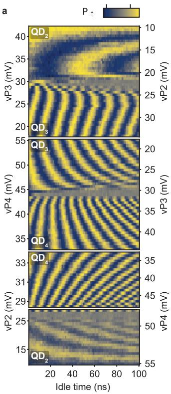
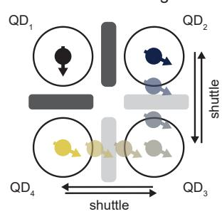
c
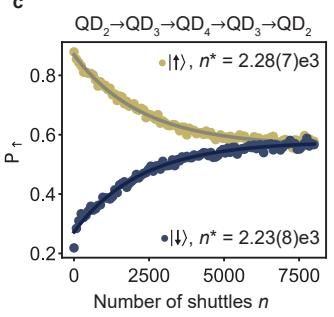
d
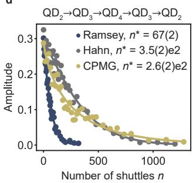
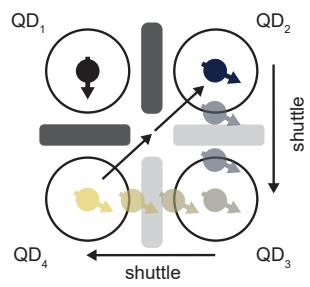
f
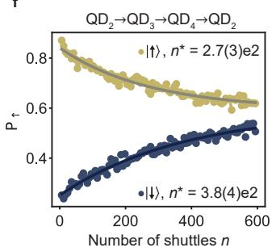
g
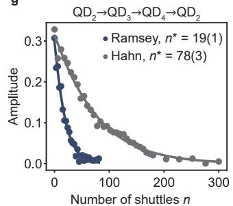
Figure 4. Coherent shuttling through quantum dots. a, Results of free evolution experiments, similar to those displayed in 1.h and l for the corner and triangular shuttling processes. In these experiments, the amplitude of the detuning pulse is increased in steps, in order to shuttle a qubit from to and back (top panel), from to to and back (second panel). The measurement in the third panel is identical to the measurement in the second panel, but the final point in the charge stability diagram is stepped towards the charge degeneracy point between and . In the bottom panel the qubit is shuttled in a triangular fashion: from to to . The ramp times for this experiment are chosen in such a way that the shuttling is adiabatic with respect to the changes in quantization axis. b, Schematic illustrating the shuttling of a spin qubit around the corner: from QD2 to to and back via and in a triangular fashion: from to to and directly back to . The double arrow from to indicates that this pulse is made in two steps, in order for the spin to shuttle via the charge degeneracy point of and avoid crossing charge transition lines. c, f, Performance for the corner shuttling (c) and the triangular shuttling (f) of a qubit prepared in the basis states. d, g, Performance for shuttling a qubit prepared in a superposition state for the corner shuttling (d) and the triangular shuttling (g) and for diferent shuttling sequences. Shuttling performance for diferent processes are summarized in Supplementary Table 1.
For the corner shuttling, the faster decay of the basis states suggests a slight increase of the systematic error per shuttling. This may originate from the use of a more elaborated pulse sequence, which makes pulse optimization more challenging. Nonetheless, the characteristic decay constant remains above 2000 and corresponds to efective distances beyond 300 µm (taking a 140 nm quantum dot spacing). The fast decay for the triangular shuttling is likely originating from the diag onal shuttling step. The tunnel coupling between and is low and more challenging to control, due to the absence of a dedicated barrier gate. The low tunnel coupling demands slower ramp times for the hole transfer. This increases the time spent close to the charge degeneracy point where spin randomization induced by excitations to higher energy states is enhanced [45].
Remarkably, we find that the performance achieved for coherent corner shuttling (as shown in Fig. 4.d) are comparable to those of coherent shuttling between neighbouring quantum dots. This stems from the performance being limited by dephasing. However, the performance for the CPMG sequence appears inferior when compared to the single echo-pulse sequence. Since the shuttling sequence becomes more complex, we speculate that it is harder to exactly compensate for the change in quantization axes. Imperfect compensation may introduce transversal noise, which is not fully decoupled using the
CPMG sequence. Moreover, close to the anticrossing, the spin is subject to high frequency noise [45], whose efect is not corrected and can be enhanced depending on the dynamical decoupling sequence.
The performance of the coherent triangular shuttling, displayed in Fig. 4.g, fall short compared to the corner shuttling. Yet, the number of shuttles reached remains limited by dephasing as shown by the large improvement of obtained using dynamical decoupling. The weaker performance are thus predominantly a consequence of the use of longer voltage ramps. A larger number of coherent shuttling steps may be achieved by increasing the diagonal tunnel coupling, which could be obtained by incorporating dedicated barrier gates.
CONCLUSION
We have demonstrated coherent spin qubit shuttling through quantum dots. While holes in germanium provide challenges due to an anisotropic g-tensor, we find that spin basis states can be shuttled times and coherent states up to times and even up to times when using echo pulses. The small effective mass and high uniformity of strained germanium allow for a comparatively large quantum dot spacing of 140 nm. This results in efective length scales for shuttling basis states of µm and for coherent shuttling of µm. By including echo pulses we can extend the efective length scale to . These results compare favourably to efective lengths obtained in silicon [15, 27–29]. We note that using efective lengths to predict the performance of practical shuttling links requires caution, as the spin dynamics will dependent on the noise of the quantum dot chain. For example, if the noise is local, echo pulses may proof less efective. However, in that case, motional narrowing may facilitate the shuttling [22, 25, 29, 46, 47]. Furthermore, operating at even lower magnetic fields and exploiting purified germanium will boost the coherence time and thereby the ability to coherently shuttle.
While we have focused on bucket-brigade-mode shuttling, our results also open the path to conveyor-mode shuttling in germanium, where qubits would be coherently displaced in propagating potential wells using shared gate electrodes. This complementary approach holds promise for making scalable mid-range quantum links and has recently been successfully investigated in silicon [29], though on limited length scales. However, for holes in germanium the small efective mass and absence of valley degeneracy will be beneficial in conveyor-mode shuttling.
Importantly, quantum links based on shuttling and spin qubits are realized using the same manufacturing techniques. Their integration in quantum circuits may provide a path toward networked quantum computing.
METHODS
Materials and device fabrication
The device is fabricated on a strained heterostructure grown by chemical vapour deposition [30, 48]. From bottom to top the heterostructure is composed of a 1.6 µm thick relaxed Ge layer, a 1 µm step graded (x going from 1 to 0.8) layer, a 500 nm relaxed layer, a strained 16 nm Ge quantum well, a 55 nm spacer layer and nm thick Si cap. Contacts to the quantum well are made by depositing 30 nm of aluminium on the heterostructure after etching of the oxidized Si cap. The contacts are isolated from the gate electrodes using a 10 nm aluminium oxide layer deposited by atomic layer deposition. The gates are defined by depositing bilayers. They are separated from the each other and from the substrate by nm of aluminium oxide.
Experimental procedure
To perform the experiments presented, we follow a systematic procedure composed of several steps. We start by preparing the system in a charge state with the hole spins in and initialized in a state, while the other spins are randomly initialized. Subsequently, and are depleted to bring the system in a charge configuration. After that, the virtual barrier gate voltage is increased to isolate the ancilla qubit in . The tunnel couplings between and and, depending on the experiment, between and are then increased by lowering the corresponding barrier gate voltages on and This concludes the system initialization.
Thereafter, the shuttling experiments are performed. Note that to probe the shuttling between and the qubit is first transferred adiabatically (with respect to the change in quantization axis) from to To determine the final spin state after the shuttlings, the qubit is transferred back adiabatically to . Next, the system is brought back in the charge state, the charge regime in which the readout is optimized. This is done by first increasing and , then decreasing and finally reloading one hole in both and . We finally readout the spin state via latched Pauli spin blockade by transferring the qubit in to and integrating the signal from the charge sensor for 7 µs. Spin-up probabilities are determined by repeating each experiment a few thousand times (typically 3000). Details about the experimental setup can be found in ref. [2].
Achieving sub nanosecond resolution on the voltage pulses
The voltage pulses are defined as a sequence of ramps with high precision floating point time stamps and voltages. The desired gate voltage sequence is generated numerically, sampled at 1 (maximum rate achievable with our setup) and then applied on the sample using arbitrary wave form generators (AWGs). To increase the resolution despite the finite sampling rate, we shift the ramps on the desired gate voltage sequence by fractions of nanoseconds. Shifting a ramp by τ results in a shift of the voltages by . The AWGs outputting the voltage ramp have a higher order low-pass filter with a cut-of frequency of approximately 400 MHz that smoothens the output signal and efectively removes the efect of the time discretization. The time shift of a pulse is not afected by the filter as the time shift does not change the frequency spectrum of the pulse. Thus the voltage sequence efectively generated on the sample is only delayed by τ allowing to achieve a sub nanosecond resolution.
ACKNOWLEDGEMENTS
We thank A. M. J. Zwerver, M. de Smet, L. M. K. Vandersypen, V. V. Dobrovitski and all the members of the Veldhorst group for inspiring discussions. M.V. acknowledges support through two projectruimtes and a Vidi grant, associated with the Netherlands Organization of Scientific Research (NWO), and an ERC Starting Grant. Research was sponsored by the Army Research Ofice (ARO) and was accomplished under Grant No. W911NF- 17-1-0274. The views and conclusions
[1] Vandersypen, L. M. K. et al. Interfacing spin qubits in quantum dots and donors—hot, dense, and coherent. npj Quantum Information 3, 34 (2017).
[2] Hendrickx, N. W. et al. A four-qubit germanium quantum processor. Nature 591, 580–585 (2021).
[3] Philips, S. G. J. et al. Universal control of a six-qubit quantum processor in silicon. Nature 609, 919–924 (2022).
[4] Lawrie, W. I. L. et al. Simultaneous single-qubit driving of semiconductor spin qubits at the fault-tolerant threshold. Nature Communications 14 (2023).
[5] Mills, A. R. et al. Two-qubit silicon quantum processor with operation fidelity exceeding 99%. Science Advances 8, eabn5130 (2022).
[6] Petit, L. et al. Universal quantum logic in hot silicon qubits. Nature 580, 355–359 (2020).
[7] Yang, C. H. et al. Operation of a silicon quantum processor unit cell above one kelvin. Nature 580, 350–354 (2020).
[8] Camenzind, L. C. et al. A hole spin qubit in a fin fieldefect transistor above 4 kelvin. Nature Electronics 5, 178–183 (2022).
[9] Borsoi, F. et al. Shared control of a 16 semiconductor quantum dot crossbar array. arXiv 2209.06609 (2022).
[10] Van Meter, R. & Horsman, D. A blueprint for building a quantum computer. Communications of the ACM 56, 84–93 (2013).
[11] Wecker, D., Bauer, B., Clark, B. K., Hastings, M. B. & Troyer, M. Gate-count estimates for performing quantum chemistry on small quantum computers. Phys. Rev. A 90, 022305 (2014).
contained in this document are those of the authors and should not be interpreted as representing the oficial policies, either expressed or implied, of the Army Research Ofice (ARO), or the U.S. Government. The U.S. Government is authorized to reproduce and distribute reprints for Government purposes notwithstanding any copyright notation herein. This work is part of the ’Quantum Inspire – the Dutch Quantum Computer in the Cloud’ project (with project number [NWA.1292.19.194]) of the NWA research program ’Research on Routes by Consortia (ORC)’, which is funded by the Netherlands Organization for Scientific Research (NWO).
DATA AVAILABILITY
Data supporting this work are available on a Zenodo repository at https://doi.org/10.5281/zenodo.8214452.
COMPETING INTERESTS
The authors declare no competing interests. Correspondence should be sent to M. V. (M.Veldhorst@tudelft.nl).
[12] Reiher, M., Wiebe, N., Svore, K. M., Wecker, D. & Troyer, M. Elucidating reaction mechanisms on quantum computers. PNAS 114, 7555–7560 (2017).
[13] Franke, D. P., Clarke, J. S., Vandersypen, L. M. K. & Veldhorst, M. Rent’s rule and extensibility in quantum computing. Microprocessors and Microsystems 67, 1–7 (2019).
[14] Li, R. et al. A crossbar network for silicon quantum dot qubits. Science Advances 4, eaar3960 (2018).
[15] Noiri, A. et al. A shuttling-based two-qubit logic gate for linking distant silicon quantum processors. Nature Communications 13, 5740 (2022).
[16] Taylor, J. M. et al. Fault-tolerant architecture for quantum computation using electrically controlled semiconductor spins. Nature Physics 1, 177–183 (2005).
[17] Boter, J. M. et al. The spider-web array–a sparse spin qubit array. Phys. Rev. Applied 18, 024053 (2022).
[18] Künne, M. et al. The SpinBus architecture: Scaling spin qubits with electron shuttling. arXiv 2306.16348 (2023).
[19] Mills, A. R. et al. Shuttling a single charge across a one-dimensional array of silicon quantum dots. Nature Communications 10, 1063 (2019).
[20] Seidler, I. et al. Conveyor-mode single-electron shuttling in Si/SiGe for a scalable quantum computing architecture. npj Quantum information 8, 100 (2022).
[21] Xue, R. et al. Si/SiGe QuBus for single electron information-processing devices with memory and micronscale connectivity function. arXiv 2306.16375 (2023).
[22] Flentje, H. et al. Coherent long-distance displacement of individual electron spins. Nature Communications 8, 501 (2017).
[23] Fujita, T., Baart, T. A., Reichl, C., Wegscheider, W. & Vandersypen, L. M. K. Coherent shuttle of electron-spin states. npj Quantum Information 3, 22 (2017).
[24] Mortemousque, P.-A. et al. Coherent control of individual electron spins in a two-dimensional quantum dot array. Nature Nanotechnology 16, 296–301 (2021).
[25] Mortemousque, P.-A. et al. Enhanced spin coherence while displacing electron in a two-dimensional array of quantum dots. PRX Quantum 2, 030331 (2021).
[26] Jadot, B. et al. Distant spin entanglement via fast and coherent electron shuttling. Nature Nanotechnology 16, 570––575 (2021).
[27] Yoneda, J. et al. Coherent spin qubit transport in silicon. Nature Communications 12, 4114 (2021).
[28] Zwerver, A. M. J. et al. Shuttling an electron spin through a silicon quantum dot array. PRX Quantum 4, 030303 (2023).
[29] Struck, T. et al. Spin-EPR-pair separation by conveyormode single electron shuttling in Si/SiGe. arXiv 2307.04897 (2023).
[30] Sammak, A. et al. Shallow and undoped germanium quantum wells: A playground for spin and hybrid quantum technology. Advanced Functional Materials 29, 1807613 (2019).
[31] Scappucci, G. et al. The germanium quantum information route. Nature Reviews Materials 6, 926–943 (2021).
[32] Hendrickx, N. W. et al. A single-hole spin qubit. Nature Communications 11, 3478 (2020).
[33] Hendrickx, N. W., Franke, D. P., Sammak, A., Scappucci, G. & Veldhorst, M. Fast two-qubit logic with holes in germanium. Nature 577, 487–491 (2020).
[34] Jirovec, D. et al. A singlet-triplet hole spin qubit in planar Ge. Nature Materials 20, 1106––1112 (2021).
[35] Jirovec, D. et al. Dynamics of hole singlet-triplet qubits with large g-factor diferences. Phys. Rev. Lett. 128, 126803 (2022).
[36] Wang, C.-A. et al. Probing resonating valence bonds on a programmable germanium quantum simulator. npj Quantum Information 9 (2023).
[37] Hendrickx, N. W. et al. Sweet-spot operation of a germanium hole spin qubit with highly anisotropic noise sensitivity. arXiv 591, 2305.13150 (2023).
[38] Studenikin, S. A. et al. Enhanced charge detection of spin qubit readout via an intermediate state. Applied Physics Letters 101, 233101 (2012).
[39] Harvey-Collard, P. et al. High-fidelity single-shot readout for a spin qubit via an enhanced latching mechanism. Phys. Rev. X 8, 021046 (2018).
[40] Lawrie, W. I. L. Spin qubits in silicon and germanium. PhD Thesis (2022).
[41] Mutter, P. M. & Burkard, G. All-electrical control of hole singlet-triplet spin qubits at low-leakage points. Phys. Rev. B 104, 195421 (2021).
[42] Bosco, S., Benito, M., Adelsberger, C. & Loss, D. Squeezed hole spin qubits in Ge quantum dots with ultrafast gates at low power. Phys. Rev. B 104, 115425 (2021).
[43] Wang, C.-A., Scappucci, G., Veldhorst, M. & Russ, M. Modelling of planar germanium hole qubits in electric and magnetic fields. arXiv 2208.04795 (2022).
[44] Stano, P. & Loss, D. Review of performance metrics of spin qubits in gated semiconducting nanostructures. Nature Review Physics 4, 672–688 (2022).
[45] Krzywda, J. A. & Cywiński, Ł. Interplay of charge noise and coupling to phonons in adiabatic electron transfer between quantum dots. Phys. Rev. B 104, 075439 (2021).
[46] Huang, P. & Hu, X. Spin qubit relaxation in a moving quantum dot. Phys. Rev. B 88, 075301 (2013).
[47] Langrock, V. et al. Blueprint of a scalable spin qubit shuttle device for coherent mid-range qubit transfer in disordered Si/SiGe/SiO2. PRX Quantum 4, 020305 (2023).
[48] Lodari, M. et al. Light efective hole mass in undoped Ge/SiGe quantum wells. Phys. Rev. B 100, 041304 (2019).
Supplementary Material: Coherent spin qubit shuttling through germanium quantum dots
Floor van Riggelen-Doelman,1 Chien-An Wang,1 Sander L. de Snoo,1 William I. L. Lawrie,1 Nico W. Hendrickx,1 Maximilian Rimbach-Russ,1 Amir Sammak,2 Giordano Scappucci,1 Corentin D´eprez,1 and Menno Veldhorst1
1QuTech and Kavli Institute of Nanoscience, Delft University of Technology,
PO Box 5046, 2600 GA Delft, The Netherlands
2QuTech and Netherlands Organisation for Applied Scientific Research (TNO), Delft, The Netherlands (Dated: August 7, 2023)
This Supplementary Material includes :
• Supplementary Notes 1-6
• Supplementary Figures 1-8
• Supplementary Table 1
• Supplementary References 1-8
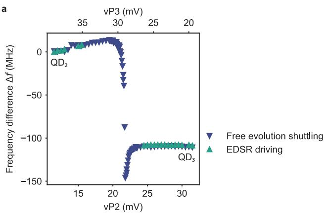
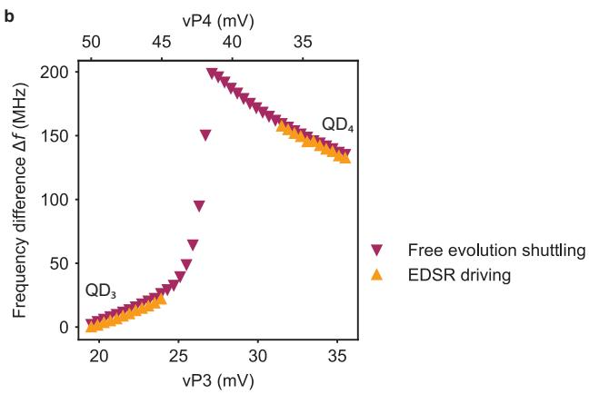
Supplementary Figure 1. Evolution of the Larmor frequency for shuttling in double quantum dots. a, b, Larmor frequency diferences and (b) measured along the detuning axis of (a) and . The quantum dot where the shuttling experiment starts is taken as the reference point for the frequency. is independently evaluated from measurements of the resonance frequency using an EDSR pulse (data displayed in Fig. 1.g and k) and from the frequency of the coherent oscillations that appear when a qubit is shuttled in a superposition state (data displayed in . 1.h and l). Both sets of data points overlap in (a) and (b), confirming that coherent oscillations arise due to a change in Larmor frequency along the detuning axis. For the free evolution experiments, the shuttling between QD2 and QD3 (shown in (a)) is completely adiabatic (ramp times of 40 ns) while the shuttling between and (shown in (b)) is only partially adiabatic (ramp times of 4 ns). In the latter case, the frequency diference measured is barely afected by the limited adiabaticity as the visibility M of the oscillations induced by the change in quantization axis from Supplementary Figure 2) is suficiently small compared to that of the oscillations arising from the phase evolution of the superposition state when the hole is in . Moreover, the Larmor frequency of both a spin in and in is very close to 1 GHz. The free evolution experiments were performed with 1 ns time precision, meaning that the oscillations due to the diabaticity of the shuttling only show up as an aliasing pattern and do not disturb the oscillations due to free evolution.
| Shuttling process | $n^*$ for $|\downarrow\rangle$ transfer | $n^*$ for $|\uparrow\rangle$ transfer | $n^*$ for $\frac{|\downarrow\rangle+i|\uparrow\rangle}{\sqrt{2}}$ transfer | $\alpha$ for $\frac{|\downarrow\rangle+i|\uparrow\rangle}{\sqrt{2}}$ transfer |
| $QD_2 \rightleftharpoons QD_3$ | $3.36\times10^{3} \pm 90$ | $3.2\times10^{3} \pm 100$ | Ramsey: $64 \pm 1$ Hahn: $376 \pm 5$ CPMG: $450 \pm 20$ | Ramsey: $1.36\pm0.05$ Hahn: $1.44\pm0.04$ CPMG: $1.14\pm0.06$ |
| $QD_3 \rightleftharpoons QD_4$ | $2.9\times10^{3} \pm 100$ | $3.1\times10^{3} \pm 100$ | Ramsey: $77 \pm 2$ Hahn: $332 \pm 6$ CPMG: $500 \pm 10$ | Ramsey: $1.28\pm0.06$ Hahn: $1.17\pm0.04$ CPMG: $1.3\pm0.07$ |
| Corner $QD_2 \rightarrow QD_3 \rightarrow QD_4$ $\rightarrow QD_3 \rightarrow QD_2$ | $2.23\times10^{3} \pm 80$ | $2.28\times10^{3} \pm 70$ | Ramsey: $67 \pm 2$ Hahn: $350 \pm 20$ CPMG: $260 \pm 20$ | Ramsey: $1.11\pm0.06$ Hahn: $1.2\pm0.1$ CPMG: $0.76\pm0.07$ |
| Triangular $QD_2 \rightarrow QD_3 \rightarrow QD_4 \rightarrow QD_2$ | $380\pm40$ | $270\pm30$ | Ramsey: $19 \pm 1$ Hahn: $78 \pm 3$ | Ramsey: $1.08\pm0.07$ Hahn: $1.07\pm0.05$ |
Supplementary Table 1. Summary of shuttling performance. For the spin basis state shuttling experiments, the spin polarization decays with the number of shuttles n are fitted by . For the coherent shuttling experiments, the coherence decays are fitted by A0 exp represents the number of shuttles that can be achieved before the polarization the coherence or drops by
Supplementary Note 1. Qubit resonance frequency nearby the interdot charge transition
In Fig. 1.g and k, we show the evolution of the qubit resonance frequency along the detuning axis of the quantum dot pair and of the quantum dot pair. is measured by shuttling the spin and applying a 4 µs long EDSR pulse on one plunger gate. While can be clearly determined when the hole is well-localized in one quantum dot, it cannot be measured nearby the charge transition as the spin-up probability has a high value over the whole range of frequency spanned. We think that this is the result of a combination of diferent efects.
Since the two quantum dots have diferent quantization axes, the system efectively behaves as a flopping-mode qubit nearby the charge transition [1–4] and the EDSR driving is thus expected to be more eficient. This appears, in Fig. 1.g, when the qubit is in : along the resonance line, we observe an alternation of high and low spin-up probabilities that witness rapid variations of the Rabi frequency. As a consequence, the power broadening increases significantly in the vicinity of the charge transition which prevents us from resolving the qubit resonance frequency. Likewise, the gradient of shear strains induced by the thermal contraction of the gate electrodes can lead to large increases of the Rabi frequency [5]. It is likely that this efect is enhanced in the vicinity of the charge transition, as the hole is delocalized between the two quantum dots and its wavefunction extends below the edges of severa gates. Finally, nearby the charge transition, excitations to higher energy states induced by charge noise are more likely to occur [6], especially on the relatively long timescale of 4 µs. These transitions to higher energy states lead to a randomization of the spin states, which explain the large spin-up probabilities observed over the full frequency range.
Supplementary Note 2. Quantifying the quantization axis tilt angle
A. Estimation based on the visibility of the oscillations induced by the change in quantization axis
The tilt angle θ between the quantization axis of two diferent quantum dots can be estimated based on the amplitude of the oscillations induced by diabatically shuttling a qubit in the state. This approximation relies on a simple geometric construction in the Bloch sphere.
Supplementary Figure 2.a shows the Bloch sphere projected on the plane defined by the quantization axes of the two quantum dots (dark blue and dark green). At the beginning of the experiment, the qubit is initialized in the state (red arrow). After shuttling to the neighboring quantum dot, the qubit state changes due to the diference between the quantization axes. In the Bloch sphere, it can be represented by rotations of the state vector around the second quantization axis. After half a period (orange arrow), the state projection on the quantization axis of the quantum dot where the experiment started difers maximally from that of the initial state. This sets the visibility M of the oscillations induced by the change of quantization axis.
a
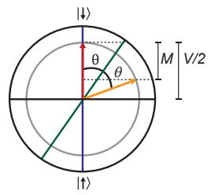
b
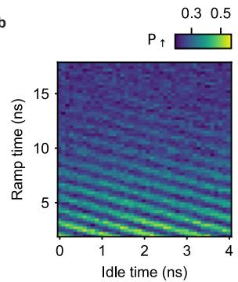
c
d
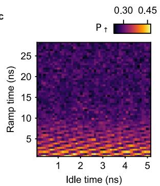
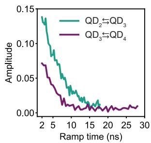
Supplementary Figure 2. Estimation of the tilt angle based on the amplitude of the oscillations induced by the diference in quantization axis. Geometric construction in the Bloch sphere allowing to determine the tilt angle θ between the quantization axes of adjacent quantum dots (blue and dark green). θ is determined from the visibility M of the oscillations induced by the change in quantization axes and the visibility of the Rabi oscillations V. Oscillations induced while shuttling a qubit in a state between and (b) and between and (c) for increasing ramp times. d, Amplitude of the oscillations as function of the ramp times.
In practise, this visibility is reduced due to imperfect initialization and readout. This can be taken into account by assuming that the state vectors have a norm with V being the visibility of Rabi oscillations measured in the quantum dot where the shuttling experiment starts. We neglect relaxation which is irrelevant at the time scale of few nanoseconds [7] and thus assume that the norm of the vector state stays constant during the rotations. We find that:
We use this expression to evaluate , the tilt angle between the quantization axes of and and . Supplementary Figure 2.b and c show the amplitudes of the oscillations induced by the change in quantization axis as function of the pulse ramp time . As discussed in the main text, the amplitudes drop rapidly to zero as increases, because the shuttling becomes more adiabatic with respect to the diference in quantization axis. For the evaluation of we use the amplitude of the oscillations at the shortest ns. We remark that there is no clear saturation of M at the smallest ramp times, which suggests that the shuttling process is still not fully diabatic and that higher visibilities could be achieved by shuttling faster. Rabi oscillations for the driving of the qubit in have a visibility of giving us . These large values for θ illustrate the strong influence of the local electric field on the direction of the quantization in germanium hole spin qubits operated with an in-plane external magnetic field.
B. Estimations based on fits with a four-level model
To get additional independent evaluation of the tilt angles, we can fit the evolution of the qubit resonance with a four-level model. To derive such a model, we consider a single hole in a germanium double quantum dot placed in an external magnetic field B. We assume that there is a finite tunnel coupling between the two quantum dots and and their quantization axis are tilted with respect to each other by an angle θ. This last assumption is suficient to take into account all efects of the spin-orbit interaction, providing a suitable basis transformation and a renormalization of the tunneling terms.
The system can then be described in the basis , where or indicates the position of the hole in quantum dot or and or A specifies its spin states in the frame of quantum dot . Its Hamiltonian is then given by:
where ϵ is the detuning energy of the double quantum dot system (taken as zero at the charge transition), is the Bohr magneton and the are the factors in the diferent quantum dots, is the azimuthal angle between the two quantization axes. We note that this model is similar to that of a flopping-mode qubit [1]. Diagonalizing the Hamiltonian, we obtain the qubit resonance frequency given by:
The evolution of along the detuning axes can then be fitted to extract the tilt angles and the tunnel couplings between neighbouring quantum dots. For this purpose, we first express the detuning energies in terms of gate voltages as and where and are the efective lever arms along the detuning axis. They are defined as and where are the virtual gate lever arms measured nearby the charge transition via photon-assisted tunnelling experiments [8] and where the are the slopes of the detuning axis. We then extract the evolution of as function of from the data displayed in Supplementary Figure (Supplementary Figure and fit it with Supplementary Figure 3.c-d display the evolution of along the detuning axis which is fitted to the above model assuming a linear dependence of with . We observe that the model reproduces well the measured evolution. This allows to estimate an interdot tunnel coupling of and a tilt angle . The latter is consistent with the lower bound found using the previous method.
Supplementary Figure 4.d-e display the evolution of along the detuning axis. In this case, fitting the data does not allow to extract the tilt angle, even if we assume a quadratic dependence of the g-factor with the gate voltage. Indeed, for , the shape of curve is nearly solely determined by the tunnel coupling and the variation of the -factor with . Consequently, the data can be equally well fitted by models where is fixed , . This leads to large uncertainty on the value of that prevents us to extract it. Nevertheless, the tunnel coupling between and can still be estimated from these fits and, for fixed to , we find GHz.
What does become clear, however, is that we cannot obtain proper fits of the data with model where is fixed to values larger than . The underlying reason appears when plotting the expected evolution of in such model: for , fL should display a minimum that we do not observe experimentally. This suggests that is lower than 50◦.
a
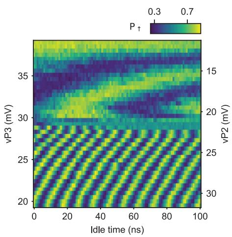
b
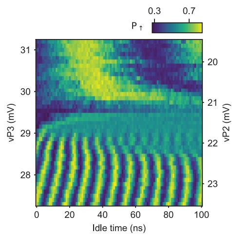
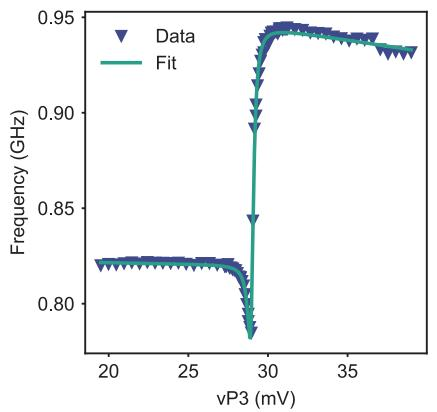
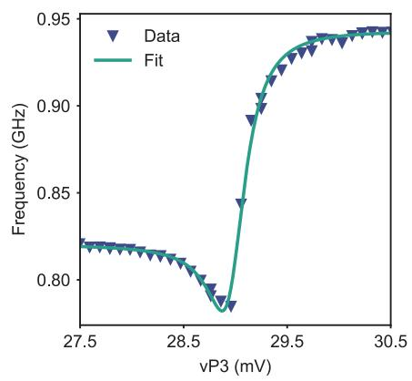
Supplementary Figure 3. Evaluation of the tilt angle between and quantization axes using a four-level model. a, Free evolution experiments for shuttling a qubit in superposition state between and back-and-forth. The superposition state is prepared in b, Zoom-in on the vicinity of the charge transition. The two data sets are identical to those displayed in Fig. 1.h. c, d, Resonance frequency extracted from the oscillations along the detuning axis in (a) and (b) and fit with the model of eq. (3).
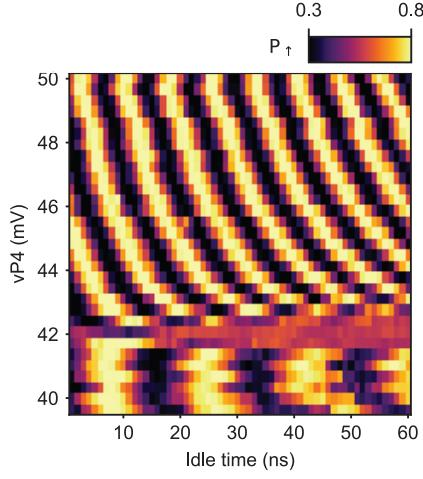
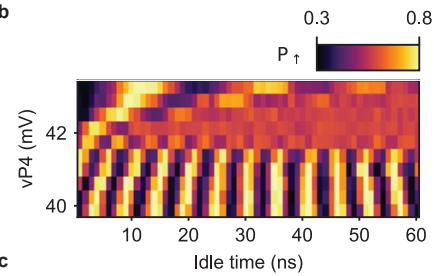
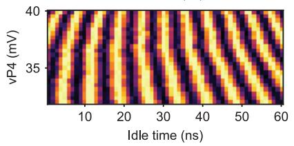
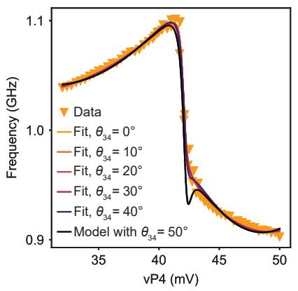
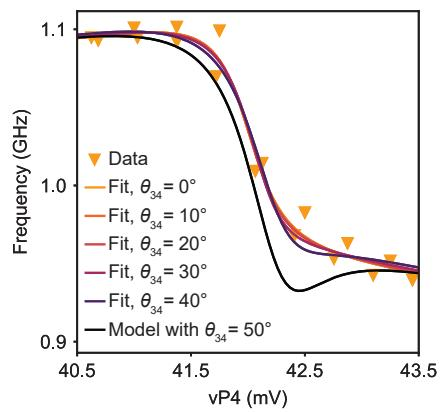
Supplementary Figure 4. Evaluation of the tilt angle between and quantization axes using a four-level model. a, b, c, Free evolution experiments for the adiabatic shuttling of a qubit in superposition state between and back-and-forth. In (a) the qubit is prepared in superposition in while in (b) and (c) the superposition state is prepared in . c, Evolution of the resonance frequency along the detuning axis, extracted from the oscillations in , (b) and (c), and fits with models of . (3) where the tilt angle is fixed. The expected evolution for is computed using the parameters extracted from the fit with
e
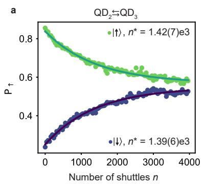
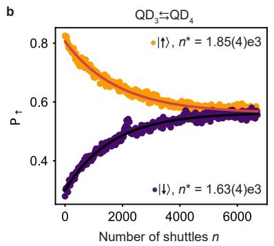
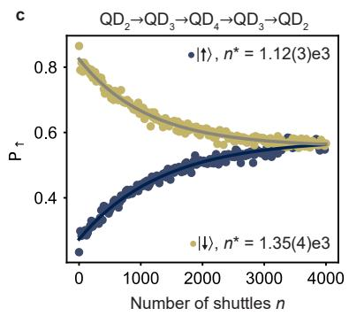
d
f
Supplementary Figure 5. Performance of adiabatic shuttling. a, b, c, Spin polarization as a function of the number of shuttling steps n for a qubit initialized in the basis states. d, e, f, Amplitude as a function of the number of shuttling steps n for qubits initialized in a superposition state, without (Ramsey) and with echo pulse (Hahn).
For completeness, we also investigate the performance of the shuttling processes when the shuttling pulses are adiabatic, i.e. when there is no rotation induced by the diference between the quantization axes of the quantum dots. Supplementary Figure 5 shows the results of such investigations for the shuttling of basis states and for the shuttling of superposition states. In both cases, we obtain significantly lower performance compared to those achieved with diabatic pulses (see Figure 3 in the main text). According to our findings, dephasing can largely explain this diference in performance for the coherent shuttling experiments. As the time required for each shuttling event is increased in the adiabatic experiments, the qubit experiences more dephasing during each shuttling step and the phase coherence is lost after a smaller number of shuttling steps n. The use of echoing pulses allows us to get an improvement of the coherent shuttling performance by a factor 6 to 8, larger than those obtained for diabatic shuttling.
For shuttling of basis states, the lower performance suggests that the probability of having a spin-flip during a shuttling increases if the latter is performed adiabatically. This could originate from the longer time spent in the vicinity of the charge transition, where spin randomization induced by charge noise is enhanced [6]. Overall, the data in Supplementary Figure 5 clearly show that an approach based on diabatic spin shuttling is preferable for hole spin qubits in germanium.
Supplementary Note 4. Charge stability diagram of pair and triangular shuttling
The charge stability diagram of the quantum dot pair measured in a configuration identical to that of the triangular shuttling, is displayed in Supplementary Figure 6. No clear interdot charge anticrossing is visible, which suggests that the tunnel coupling between the two quantum dots is very low. This is expected, considering the device geometry, and it forces us to split the final pulse for the triangular shuttling in two parts. As depicted in Supplementary Figure 6, the voltages are first changed to bring the system close to the degeneracy point before applying a second pulse that brings the system in the (1,1,0,0) charge state. This reduces the probability that we excite the charge state, while transferring the qubit.
Supplementary Figure 6. Charge stability diagram of quantum dot pair . No clear interdot transition can be distinguished. The shuttling of a spin qubit from to is performed using two voltages pulses (white arrows).
Supplementary Note 5. Optimization of the shuttling pulses to mitigate the efects of spin-orbit interaction
In this section, we illustrate and discuss the importance of careful pulse optimization. Supplementary Figure 7 shows the results of experiments where we probe the performance of the coherent shuttling between and using the Ramsey sequence depicted in Fig. 3.a. The detuning pulses used for all these experiments are identical, except for the idle time in (idle time 2 in Fig. 3.b). This idle time in was optimized to 0.95 ns for the experiments displayed in the main text.
We observe that the evolution of amplitudes extracted at the end of the shuttling sequence is strongly dependent on the idle time in . For and ns, which are close to the optimum, the amplitude shows a smooth and progressive decay. When is increased, oscillations of the amplitude as function of the number of shuttling steps n appear and their periodicity varies with . These oscillations witness the rotations induced by the change of quantization axes, which are imperfectly compensated for ns. They lead to coherent errors after each shuttling event, which add , and significantly modify the state of the qubit. For example, for ns, the superposition state is virtually transformed to a spin basis state after a few shuttling rounds. This emphasizes the necessity of optimizing the voltages pulses to compensate for the efect of rotations induced by the spin-orbit interaction.
The optimized idle times for the each shuttling processes can be found by performing measurements similar to those displayed in Supplementary Figure and by looking for regular decay of the amplitude as function of This optimization can also be done similarly studying the decay of the spin-up probabilities in spin basis state shuttling experiments.
Supplementary Note 6. Qubit dynamics during coherent shuttling experiments for non-optimized idle times
In Supplementary Figure we see that for non-optimized idle times, like ns, the amplitude of the oscillations with the phase can saturate to a finite value. This is in contrast to what we observe for optimized idle times ns, which decay to zero. To understand this feature, we carry out simulations of the dynamics of a qubit initialized in the superposition state which is shuttled between two neighboring quantum dots. Each shuttling step is modelled by a rotation. This rotation arises from the precession around the quantization axis of the quantum dot towards which the qubit is shuttled. We also calculate for every even n the expected measurement result, i.e. the amplitude of the oscillations that appear when the phase of the second pulse is varied. This is shown in Supplementary Figure , with two examples corresponding to a non-optimized idle time and an optimized idle time.
Supplementary Figure 8.a displays the trajectory in the Bloch sphere of the qubit for the first 16 shuttling steps, in the reference frame of the quantum dot where the shuttling experiment starts. The diferent states of the qubit map a circle which is tilted compared to the equator. The product of the two rotations generated by shuttling back and forth is equivalent to a single rotation around a fixed axis. Consequently, multiple shuttling cycles can be seen as successive rotations around this fixed axis which elucidates the trajectory observed in the Bloch sphere. This also explains the oscillations of the amplitude as function of n seen in Supplementary Figure 7, as the distance between origin and the projection of the state on xy-plane can vary significantly depending on the number of shuttles for an non-optimized idle time. In contrast, when the idle times are well-optimized, the qubit states are on the equator of the Bloch sphere and no oscillations of the amplitude with n can be observed.
Supplementary Figure 7. Signatures of non-optimized idle times in Ramsey shuttling experiments. Results of coherent shuttling experiments between QD2 and QD3 obtained using Ramsey sequences. The idle time spent in QD3 is diferent for the results shown in the diferent subplots, as indicated by the titles. For non-optimized idle times, oscillations of the amplitude as function of the number of shuttles n appear and the amplitude can saturate to a non-zero value at large n.
Next, we include the efects of dephasing in the simulations, by assuming that the qubit frequencies fluctuate between repetitions of a given experiment with a fixed n. We observe that the state of the qubit is spread along a circle with a distribution that becomes more uniform as n increases, meaning when the qubit experiences more dephasing. An example is shown in Supplementary Figure 8.b for , corresponding to the data shown in Supplementary Figure 8.c. The center of the circle, which is equivalent to the statistical average of the qubit state when the qubit is completely dephased, is not on the equator on Bloch sphere. This explains the finite amplitude observed in the measurements at large n. Except for the revival of the amplitude observed for ns, these simulations capture most of the features observed in Supplementary Figure 7.
Supplementary Figure 8. Simulation of the efect of non-optimized idle times. Distribution of the qubit states after an even number of shuttles, for an non-optimized idle time. b, Spread of the qubit state after a large number of shuttles, when the qubit is dephased. Simulated measurement results, i.e. amplitude of the oscillations appearing while varying the phase of the second pulse, as a function of for a non-optimized idle time and an optimized idle time.
[1] Benito, M. et al. Electric-field control and noise protection of the flopping-mode spin qubit. Phys. Rev. B 100, 125430 (2019).
[2] Croot, X. et al. Flopping-mode electric dipole spin resonance. Phys. Rev. Res. 2, 012006 (2020).
[3] Mutter, P. M. & Burkard, G. Natural heavy-hole flopping mode qubit in germanium. Phys. Rev. Res. 3, 013194 (2021).
[4] Hu, R.-Z. et al. Flopping-mode spin qubit in a Si-Mos quantum dot. Applied Physics Letters 122, 134002 (2023).
[5] Abadillo-Uriel, J. C., Rodr´ıguez-Mena, E. A., Martinez, B. & Niquet, Y.-M. Hole spin driving by strain-induced spin-orbit interactions. arXiv 2212.03691 (2022).
[6] Krzywda, J. A. & Cywi´nski, L. Interplay of charge noise and coupling to phonons in adiabatic electron transfer between quantum dots. Phys. Rev. B 104, 075439 (2021).
[7] Lawrie, W. I. L. et al. Quantum dot arrays in silicon and germanium. Applied Physics Letters 116, 080501 (2020).
[8] Oosterkamp, T. et al. Microwave spectroscopy of a quantum-dot molecule. Nature 395, 873–876 (1998).